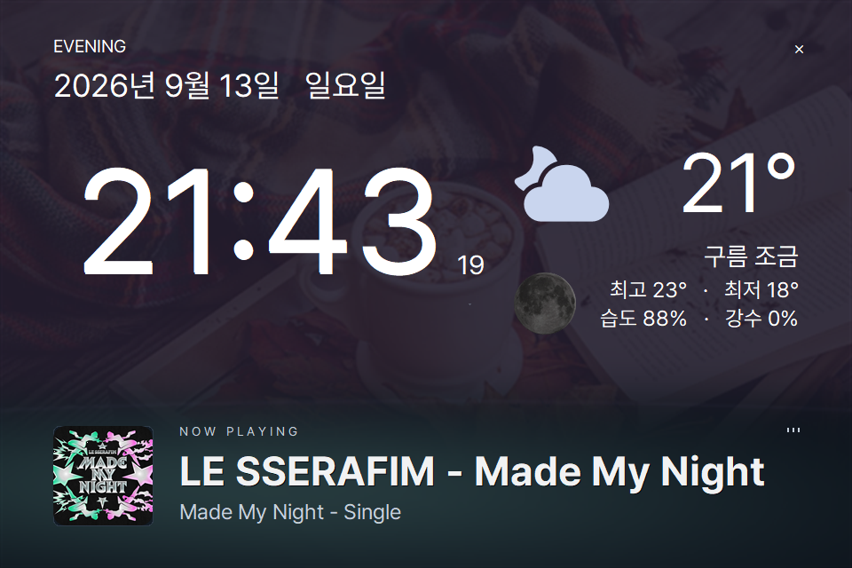
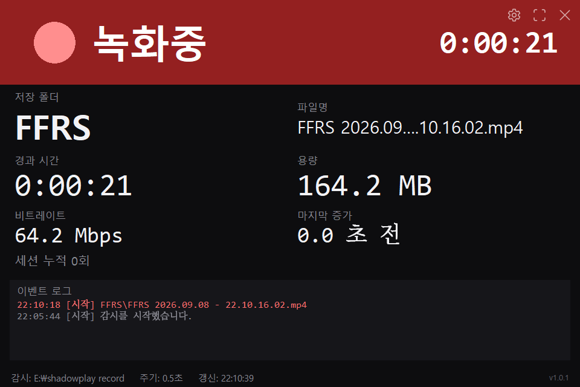

01
녹화 상태 표시
녹화가 시작되면 붉은 표시와 큰 경과 시간으로 바뀝니다. 표시등은 밝은 쪽으로 깜박이고 크기까지 함께 커져서 멀리서도 헷갈리지 않습니다.
NVIDIA ShadowPlay 의 녹화 표시를 꺼 두어도 지금 녹화가 도는지 알 수 있습니다. 녹화 폴더만 지켜보다가 녹화가 시작되면 보조 모니터를 붉은 녹화 화면으로 바꾸고, 녹화가 없는 동안에는 시계와 날씨, 듣고 있는 음악을 띄웁니다.
ShadowPlayNotifier.exe · 19.2 MB · 설치 과정 없이 바로 실행합니다.

파일이 커지는지, 쓰기로 열려 있는지를 함께 살펴 녹화를 판정합니다. 시작하거나 멈추면 폴링 주기 한 번 안에 화면이 바뀝니다.
녹화가 없는 동안에는 시계와 날짜, 날씨, 오늘 달, 듣고 있는 음악과 소리 파형을 계절 사진 위에 보여 줍니다.
폴더를 읽기만 하고 결과물에는 손대지 않습니다. 어떤 녹화 도구를 쓰든 동작하며, 창을 닫으면 트레이에서 감시만 이어 갑니다.
보조 모니터를 늘 켜 두는 자리에 맞추어, 멀리서도 읽히는 크기로 필요한 것만 띄웁니다.
녹화가 시작되면 붉은 표시와 큰 경과 시간으로 바뀝니다. 표시등은 밝은 쪽으로 깜박이고 크기까지 함께 커져서 멀리서도 헷갈리지 않습니다.
저장 폴더와 파일 이름, 경과 시간, 용량, 비트레이트, 마지막으로 파일이 커진 시각을 함께 보여 줍니다.
녹화 프로그램에 끼어들지 않고 폴더를 읽기만 합니다. 녹화 결과물을 지우거나 옮기는 기능은 넣지 않았습니다.
Pretendard로 맞춘 큰 시계와 날짜, 요일에 더해 기온과 오늘 달, 날씨 정보를 띄웁니다. 콜론만 매초 깜빡이고 초 숫자는 계속 표시됩니다. 달은 작은 화면에서도 윤곽이 보입니다. 날씨는 Open-Meteo 에서 받으며 API 키가 필요 없습니다.
Spotify 에서 듣고 있는 곡과 아티스트, 앨범 커버를 보여 줍니다. 로그인이나 계정 연결을 요구하지 않습니다.
스피커로 나가는 소리를 12개 대역으로 나누어 64개의 무지개색 막대로 그립니다. 소리는 세기만 재고 녹음하거나 저장하지 않습니다.
계절이 바뀌면 배경 사진도 조용히 바뀌고, 심야부터 저녁까지 화면 색이 함께 물듭니다. 사진은 실행 파일에 들어 있어 인터넷이 없어도 나옵니다.
창 크기와 같은 해상도의 모니터를 자동으로 찾아 그 자리에 띄웁니다. 전체화면으로 바꾸면 글자와 정보 영역이 해상도에 맞추어 함께 커집니다.
창을 닫으면 알림 영역으로 들어가 녹화 감시만 이어 갑니다. 트레이 메뉴에서 ‘윈도우 시작 시 실행’을 체크하면 로그인 후 자동으로 켜집니다. 감시 폴더와 모니터는 환경설정에서 바꿉니다.
시계가 있던 자리에 경과 시간이, 기온이 있던 자리에 용량이 들어갑니다. 녹화가 시작되어도 화면이 통째로 갈리지 않고, 사진의 조명만 낮추어 붉은 표시를 띄웁니다.
월페이퍼 화면큰 시계와 날짜, 날씨가 가운데를 차지하고 아래쪽에 지금 듣는 곡과 소리 파형이 놓입니다. 글자는 저마다 놓인 자리의 배경 밝기를 재어 흰색과 검정 가운데 잘 보이는 쪽으로 칠해집니다.

녹화 화면경과 시간이 화면을 채우고 오른쪽에 용량과 비트레이트, 마지막으로 파일이 커진 시각이 붙습니다. 아래 이벤트 로그에는 녹화가 시작되고 끝난 기록이 남습니다.
받은 실행 파일을 그대로 켜면 됩니다. 설정은 실행 파일 옆 config.json 에 저장되고, 바꾼 값은 앱을 껐다 켜지 않아도 곧바로 적용됩니다.
ShadowPlayNotifier.exe 를 내려받아 원하는 폴더에 둡니다. 압축을 풀 필요도, Python 을 깔 필요도 없습니다.
두 번 눌러 실행하면 창 크기와 같은 해상도의 모니터를 찾아 그 자리에 뜹니다. 창은 아무 곳이나 끌어 옮기고 F11 로 전체화면에 들어갑니다.
오른쪽 위 환경설정에서 NVIDIA App 의 동영상 저장 폴더를 고르고 저장하면 그때부터 하위 폴더까지 지켜봅니다.
쓰다가 막히면 README 에 조작법과 설정 항목을 정리해 두었고,
녹화가 잡히지 않을 때는 실행 파일 옆 monitor.log 를 먼저 열어 보십시오.
녹화할 때는 녹화 상태를, 그렇지 않을 때는 시계와 날씨와 음악을 띄웁니다. 무료이며 MIT 라이선스로 공개했습니다.